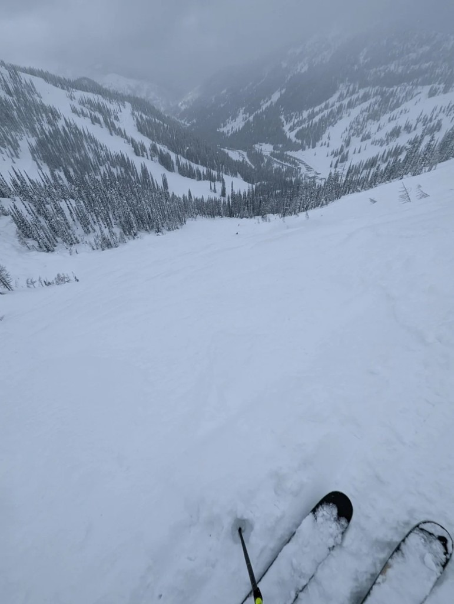
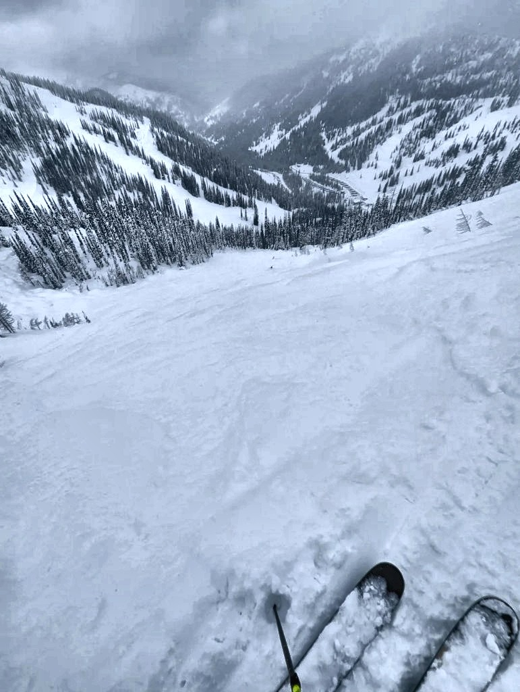
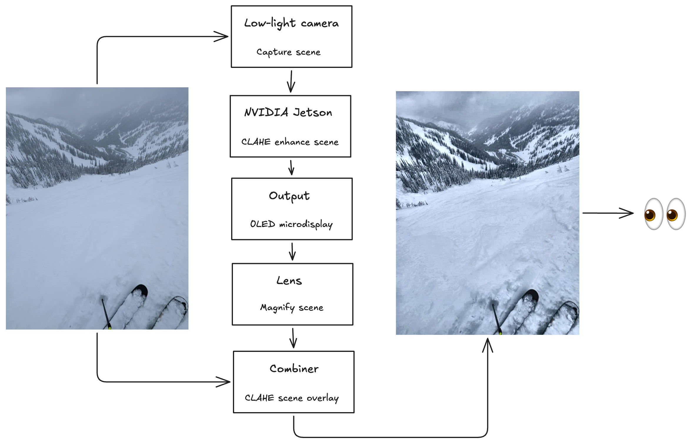
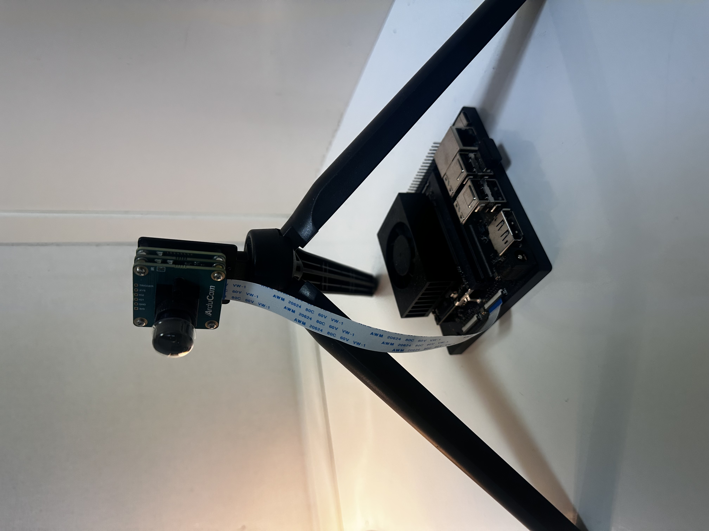
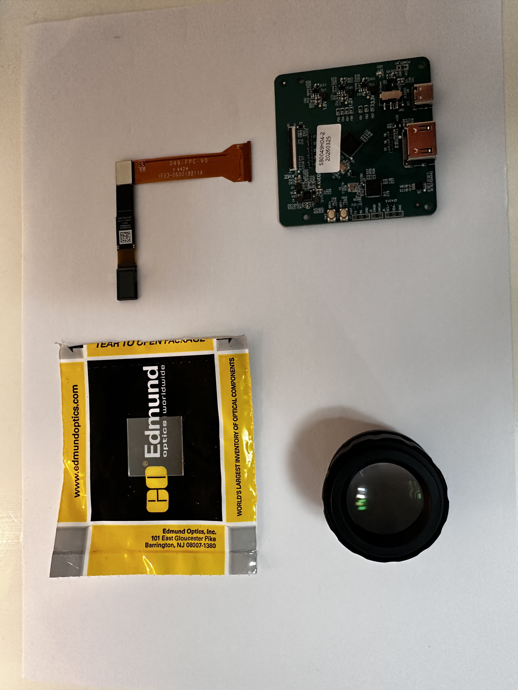

Christopher Han
ProjectsAR Snow Goggles
Note: This project is in active development. I'll update this page as I make progress.
- Overview
- Hardware project building AR ski and snowboard goggles to improve on-moutain visibility on low visibility days.
- Boosts contrast, brightness, and overall visibility to improve situational awareness and minimize risk.
- Problem
- I've been snowboarding for 15 years and started splitboarding in 2022 to access the backcountry.
- Snowboarding fresh snow is exhilirating, but only comes during snow storms. Powder days are often overcast, cold, and low visibility.
- Due to overcast weater, there are no shadows on the snow making it difficult to see the slopes and read the terrain features.
- Low visiblity increases risk and the potential for accidents, and even death.
- Goal
- Improve overall constrast and visibility in order to improve on-snow performance, situational awareness, and safety
- Use CLAHE (Contrast Limited Adaptive Histogram Equalization) to enhance the scene in real time
- Materials / Hardware
- GPU: NVIDIA Jetson Orin Nano
- Camera: Arducam xISP - Darksee, Pre-tuned ISP, 2MP Low Light MIPI Camera
- Display: 0.49" Micro OLED Display, 1920x1080 resolution, 3000 NITS
- Combiner: 25 x 25mm 30R/70T (Reflective / Transmissive)
- Optics: OPE05-12XN Magnifying lens
- Architecture
- Hardware
- Image processing

The camera is capturing a low visibility scene (my office) and I'm using CLAHE to enhance the image in real time. The image becomes noisy / grainy the more I boost the contrast, so I added a denoisining option. 
I'm using bilateral filtering to reduce noise. Here's I'm cyling through various denoising levels. Noise reduction is subtle. - What's next
- Overall, the scene I tested was extremely dark (office with just a desk lamp) and not representative of real-world, overcast conditions I'm targeting. I think it's safe to move forward to testing this in the wild.
- Make a head mount or modify existing snow goggles to mount all the components.
- Test in the real world and iterate.




